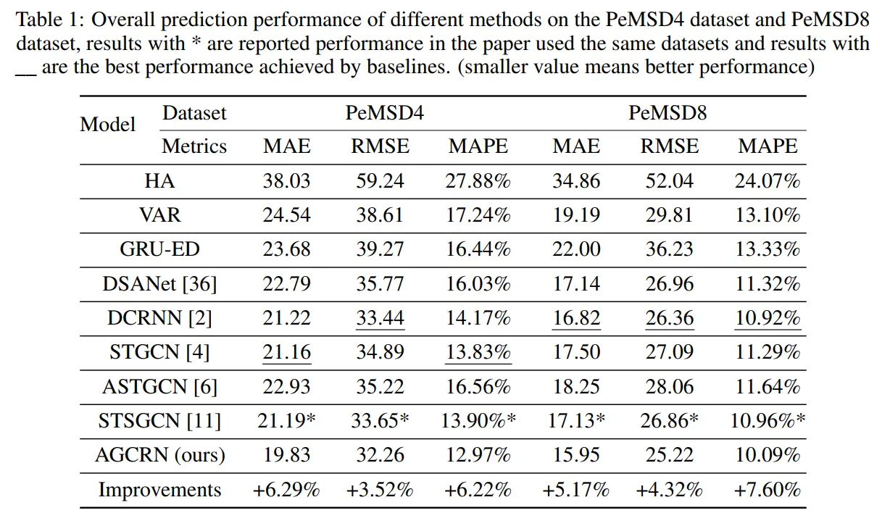

本文详细介绍了论文AGCRN: Adaptive Graph Convolutional Recurrent Network for Traffic Forecasting的研究内容和成果
介绍
智能交通系统的发展仰仗着交通预测技术的发展，而交通预测的难点在于复杂的内部依赖关系（同一个交通序列的时间联系）和相互依赖关系（不同交通序列的空间联系）。传统方法例如自回归整体均值移动（ARIMA）和向量自回归（VAR）都只采用了时间序列建模，他们不能捕获非线性关系和大规模交通数据中错综复杂的时空关联。而基于深度学习的方法仅仅用循环神经网络建模时间关联——用长短记忆网络和门电路卷积单元；用基于图卷积神经网络（GCN）的方法建模非结构化的交通序列数据以及他们的内在联系。这样构建的模型只对于所有交通序列中突出且共有的模式非常敏感，却无法普适而精确地捕获所有的特定模式。这是因为时间序列可能表达多种多样的模式，然而基于图卷积升级网络的方法却需要预定义一个构建好内部联系的图来捕获空间关联性，而这个过程非常得直觉化，经验性，不完整性，故而对于特定的预测任务并没有直观联系。
而本文为了解决以上问题通过修改现有方法的基本模块提出了两个相对简明的机制。是为了增强图卷积神经网络而提出的两个适应性的模块：1）一个节点参数适应学习模块（NAPL）用来为每个交通序列学习节点相关的模式；2）一个数据适应图生成模块（DAGG）用以根据数据来推理节点结构和属性嵌入。以上两个模块互相独立且可以被分别或是独立地应用于现存的基于图卷积神经网络的交通预测模型。更进一步，这两个模块可以和循环神经网络组合起来，提出一个整合好的交通预测模型AGCRN，它可以捕获精确的特定节点交通序列中的时空关联并且整合内嵌进入DAGG模块。训练AGCRN可以对于每个交通序列源创造一个有意义的节点表达向量。这些表达可以被潜在应用于其他任务。
相关工作
-
相关时间序列预测——LSTM和GRU，但都不能兼顾空间关联
-
基于图卷积神经网络的交通预测，例如DCRNN和Graph WaveNet，以及更新的ASTGCN、STSGCN和GMAN，但是他们均不能捕获动态的时空关联性，只能捕获交通序列间共有的时空关系并且严重依赖预定义的图
方法论
问题定义
考虑N个相关的单变量时间序列$\mathcal{X}=[ X_{:,0},X_{:,1},…,X_{:,t},… ]$,其中$X_{:,t}:=[x_{1,t},x_{2,t},…,x_{i,t},…,x_{n,t}]^T\in R^{N\times 1}$代表N个信源在时间戳t时发出的信号，目标是基于历史观测值预测未来的值，问题可以形式化为找到一个函数$\mathcal{F}$，基于过去$T$步的历史数据预测未来$\tau$步的数据：
$$[X_{:,t+1},X_{:,t+2},…,X_{:,t+\tau},…]= \mathcal{F}_\theta (X _{:,t}, X _{:,t-1},…, X _{:,t-T+1})$$
其中$\theta$表示模型中所有可学习的参数。为了精确地大批量处理交通序列间的空间关联，可以进一步在图$\mathcal{G}=(\mathcal{V},\epsilon,A)$上表示，其中$\mathcal{V}$是顶点集，代表交通序列信源，$|\mathcal{V}|=N$，$\epsilon$是边集，$A \in R^{N\times N}$是图的邻接矩阵，代表信源间的关系（空间距离或是相似度），因此，问题可以被表示为：
$$[ X_{:,t+1},X_{:,t+2},…,X_{:,t+\tau},… ]=\mathcal{F} _\theta(X _{:,t},X _{:,t-1},…,X _{:,t-T+1};\mathcal{G})$$
节点适应性参数学习(NAPL)
许多关于交通预测的工作都倾向于用GCN捕获交通序列间的空间关系并遵循在谱域上计算的原则，图卷积可以被一阶切比雪夫不等式较好地近似，大致过程可以总结为如下推导：
$$X \ast_{\mathcal{G}} g=\mathcal{F^{-1}}(\mathcal{F}(x)\odot\mathcal{F}(g))=U(U^Tx \odot U^Tg)=U(diag(U^Tg)U^TX)$$
令卷积核$g_\theta=diag(U^Tg)$且应用切比雪夫不等式近似：
$$X \ast_{\mathcal{G}} g=Ug_\theta U^TX=U(\sum_{i=0}^{k-1}{\beta_i T_i(\hat{\Lambda})})U^TX \approx U(\sum_{i=0}^{k-1}{\beta_i (\sum_{c=0}^{c=k-1}\alpha_{ci}\Lambda^c}))U^TX$$
$$=\sum_{i=0}^{k-1}{\beta_i (\sum_{c=0}^{c=k-1}\alpha_{ci}(U\Lambda U^T)^c})X=\sum_{i=0}^{k-1}{\beta_i (\sum_{c=0}^{c=k-1}\alpha_{ci}L^c})X$$
$$=\sum_{i=0}^{k-1}{\beta_iT_i(\hat{L})} X$$
切比雪夫不等式的递推公式为:
$$T_0(x)=1,T_1(x)=x,T_{n+1}(x)=2xT_n(x)-T_{n-1}(x)$$
而只采用一阶切比雪夫不等式近似，就可以简化为：
$$\sum_{i=0}^{1}{\beta_iT(\hat{L})} X=(\beta_0+\beta_1 \hat{L})X$$
又已知$\hat{L}=L-I_n$且其中L为归一化图拉普拉斯矩阵$L=I_n-D^{-\frac{1}{2}}AD^{-\frac{1}{2}}$
故而原式为$(\beta_0-\beta_1(D^{-\frac{1}{2}}AD^{-\frac{1}{2}}))X$，令$\beta_0=\theta=-\beta_1$再加上偏置项就有
$$X \ast_{\mathcal{G}}g=(D^{-\frac{1}{2}}AD^{-\frac{1}{2}}+I_n)\theta X+b$$，当将输入输出扩展成整个网络，则有:
$$Z=(I_N+D^{-\frac{1}{2}}AD^{-\frac{1}{2}})\mathbb{X}\Theta+\mathbb{b}$$
其中$A \in R^{N\times N}$是邻接矩阵，$D$是度矩阵，$\mathbb{X}\in R^{N\times C}$和$Z\in R^{N\times F}$
分别是GCN层的输入和输出，$\Theta \in R^{C\times F}$和$\mathbb{b} \in R^{F}$表示可学习的参数和偏置
扩展后的$\Theta$可以看作是多节点共享参数，而最坏情况也可以学习成对角矩阵（右乘对角矩阵相当于对于原矩阵同一列乘相同的放缩系数，即和扩展前的含义一致）
虽然上述方式可以快速学习多节点所共有的显著模式并能显著降低参数量，但是用于交通预测问题时却有一些不足：由于交通时序数据的多样性，即便是相邻节点的交通流量也可能由于一些特定的属性表现出不相似的模式，而来自于不连接的节点的交通序列可能表现出相反的模式。故而仅仅捕获所有节点所共有的模式并不能用于精确的交通预测，需要对于每个节点维护一个独立的参数空间进行参数学习。
对于扩大的参数空间$\Theta \in R^{N\times C\times F}$，对其进行分解从而减少计算复杂度，$\Theta = E_{\mathcal{G}}\cdot W_{\mathcal{G}}$，其中$E_{\mathcal{G}}\in R^{N\times d}$，$W_{\mathcal{G}}\in R^{d\times C\times F}$。从单节点的视角来看，该因式分解相当于为$i$节点从参数池$W_{\mathcal{G}}$中提取参数$\Theta^i$（根据分量$E^i_{\mathcal{G}}$），同理，$b_{\mathcal{G}}\in R^{d\times F}$：
$$Z=(I_n+D^{-\frac{1}{2}}AD^{-\frac{1}{2}})XE_{\mathcal{G}}W_{\mathcal{G}}+E_{\mathcal{G}}b_{\mathcal{G}}$$
数据自适应图生成(DAGG)
基于GCN的预测模型的另外一个问题就是需要一个预定义的邻接矩阵$A$用以图卷积操作。现存方法主要以两种方式定义矩阵：1）地理距离；2）相似度。然而这些都较为直觉化，不能包含完整的空间依赖且不和具体的预测任务直接相关。并且不能给其他领域不具备相关知识的工作人员直接应用，使得其较为低效。
为了解决上述问题，提出一个新颖的模块——数据自适应图生成模块（DAGG），用以根据数据自动推理隐藏的内部联系。该模块首先为所有节点初始化一个节点嵌入表示词典$E_A\in R^{N\times d_e}$，其每一行代表节点的嵌入表示，$d_e$代表节点嵌入空间的维数。参照定义图时用得节点相似度，新的节点间的相似度可以用$E_AE^T_A$表示：
$$D^{-\frac{1}{2}}AD^{-\frac{1}{2}}=softmax(ReLU(E_A\cdot E_A^T))$$
这样操作可以避免生成$A$和计算$L$，直接算出$D^{-\frac{1}{2}}AD^{-\frac{1}{2}}$，在训练过程中，$E_A$可以自动更新来学习不同交通序列间的隐藏细节并且为图卷积算出自适应性矩阵：
$$Z=(I_N+softmax(ReLU(E_A\cdot E_A^T)))X\Theta$$
自适应图卷积循环神经网络（AGCRN）
除了空间关联，交通预测还涉及复杂的时间关联性。这部分提出了AGCRN——组合了NAPL、DAGG以及Gated Recurrent Units（GRU），即将上述机制结合得到新的图卷积，并且将这种图卷积集成到GRU中替代原有的线性层同时捕捉交通数据中的时空依赖，整个模型可以形式化表示为如下：
$$\tilde{A}=softmax(ReLU(EE^T))$$
$$z_t=\sigma(\tilde{A}[X_{:,t},h_{t-1}]EW_z+Eb_z)$$
$$r_t=\sigma(\tilde{A}[X_{:,t},h_{t-1}]EW_r+Eb_r)$$
$$\hat{h} _t=tanh(\tilde{A}[X _{:,t},r\odot h _{t-1}]EW _{\hat{h}}+Eb _{\hat{h}})$$
$$h_t=z\odot h_{t-1}+(1-z)\odot \hat{h}_t$$
$X_{:,t}$和$h_t$是时间戳t的输入和输出，$[\cdot]$表示连接操作，$z$和$r$是重置门和更新门。$E$，$W_z$，$W_r$，$W_{\hat{h}}$，$b_z$，$b_r$以及$b_{\hat{h}}$都是模型AGCRN中的可学习参数。
多步交通预测
使用AGCRN作为编码器捕获历史序列中的时空依赖，并且直接使用线性变换将编码器最后一步的输出$H\in R^{N\times d_0}$转换为未来多步的序列预测值$\hat{Y}\in R^{N\times \tau}$，其中$\tau$表示未来序列的长度，使用$L_1$损失函数：
$$\mathcal{L}(W_\theta)=\sum_{i=t+1}^{i=t+\tau}|X_{:,i}-X^{'}_{:,i}|$$
其中$W_\theta$代表所有可学习参数，$X_{:,i}$代表gt，$X^{'}_{:,i}$代表所有节点在时间戳$i$时的预测值
实验
数据集
此文使用公开的PEMS04与PEMS08两个交通数据集
实验设置
将AGCRN与领域所有的高性能模型进行对比：
- Historical Average (HA)
- Vector Auto-Regression (VAR)
- GRU-ED
- DSANet
- DCRNN
- STGCN
- ASTGCN
- STSGCN

metrics
使用了三个广泛使用的metrics——- Mean Absolute Error (MAE), Root Mean Square Error(RMSE), and Mean Absolute Percentage Error (MAPE)
原文
如果您喜欢此博客或发现它对您有用，则欢迎对此发表评论。 也欢迎您共享此博客，以便更多人可以参与。 如果博客中使用的图像侵犯了您的版权，请与作者联系以将其删除。 谢谢 ！